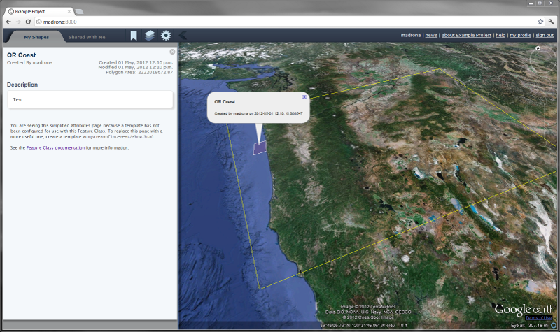

These instructions will walk you through developing a basic implementation of Madrona. This includes installing from the development repository, setting up a sample app, testing that everything installed smoothly, then doing some basic customization. By the end you’ll have an application that will perform all the basic functions needed to start drawing MPAs on a map.
It is important to understand how a Madrona application is structured. There are essentially two codebases:
- madrona - a python module providing a set of django apps that contain the core functionality common to all Madrona instances.
- the project code - a django project which implements and extends the functionality provided by madrona (specific to the particular project’s needs).
By seperating the two codebases, we can more easily maintain multiple Madrona projects while continuing to improve the underlying core functionality. If you are creating your own project from scratch, you will likely only need to work on the project-specific code; the madrona library can be installed just like any other python module and you should’t need to mess with any madrona code.
You will need to install madrona’s dependencies and madrona itself. For detailed instructions, please follow the Installation guide.
In this example, we’ll set up a new Madrona instance for the state of Oregon. We use django-admin.py to create a standard django project:
cd /usr/local/src
mkdir oregon_project
cd oregon_project
django-admin.py startproject oregon
cd oregon
You should see the following directory structure:
oregon
|-- __init__.py
|-- manage.py
|-- settings.py
`-- urls.py
Note
Though madrona includes several example projects, you are encouraged to create your Madrona instance as a seperate python package outside of the madrona source tree. This will allow for clear seperation between the underlying libraries (madrona) and your implementation (the “project”)
We now need to configure the settings and urls for our oregon project.
First, while we appreciate django-admin’s attempt at an initial settings.py file, it doesn’t really work for us in this case. Because madrona contains sensible default settings, we only need to worry about settings specific to this project.
Delete everything in settings except for the SECRET_KEY and add the following to the settings.py file:
# Django settings for oregon project.
from madrona.common.default_settings import *
SECRET_KEY = '--' # Keep the one generated by django admin!
BASE_DIR = os.path.dirname(os.path.abspath(__file__))
TIME_ZONE = 'America/Vancouver'
ROOT_URLCONF = 'oregon.urls'
DATABASES = {
'default': {
'ENGINE': 'django.contrib.gis.db.backends.postgis',
'NAME': 'oregon',
'USER': 'postgres',
}
}
INSTALLED_APPS += ( 'omm', )
from settings_local import *
Notice the final two lines; First we install an app called ‘omm’ that will hold the project specific models, views and templates. We haven’t yet created that app yet (that’s the next step).
Secondly, we import a file called settings_local.py which we’ll also need to create. This can be any settings specific to your local machine (such as your Google Earth API Key, database connections, custom paths, log settings, etc). For now we can just create an empty file:
touch settings_local.py
Lingcod is designed without any hardcoded feature types (though we do provide plenty of examples!). Features are the entities that users can create, edit, share and analyze. Each type of feature can be customized with it’s own attributes, it’s own behavior and it’s own relationships with other features. FeatureCollections are a special type of Feature that allows you to organize Features into logical sets or even nested hierarchies; they are analagous to directories in your operating system except that you can define their behavior and their relationships with other features.
Let’s start with a simple example. Let’s say we want to develop a collaborative system for creating, sharing and analyzing Marine Protected Areas (MPAs). We also want to be able to put these MPAs into Folders to keep things organized.
First, let’s create the app to hold our custom features:
python manage.py startapp omm
Note
Don’t use underscores _ in your app name; Underscores are used as a delimiter for certain internal naming conventions so using them in the app name will lead to errors.
Here we should see the following directory structure created for us:
omm
|-- __init__.py
|-- models.py
|-- tests.py
`-- views.py
We can ignore the tests and views for now; for now we’ll focus on creating the Mpa and Folder models. Open omm/models.py and add:
from madrona.features.models import PolygonFeature, FeatureCollection
from madrona.features import register
@register
class Mpa(PolygonFeature):
class Options:
form = 'oregon.omm.forms.MpaForm'
Note
The python convention is to name your model classes using CapsCase. Just don’t use underscores _ in the feature class name.
Next create a file to hold the forms called forms.py
from madrona.features.forms import FeatureForm, SpatialFeatureForm
from omm.models import Mpa, Folder
class MpaForm(SpatialFeatureForm):
class Meta(SpatialFeatureForm.Meta):
model = Mpa
The above is a barebones MPA feature inherited from the PolygonFeature base class. All the basic attributes are included by default. A form for creating and editing Mpas is also provided; again inheriting from a SpatialFeatureForm base class so the default behavior takes only a few lines of code. The only additional information required is the Options class with a form property specifying the full python path to the associated Form (mandatory). Finally the @register decorator at the top of the class is required to register the Mpa feature class with madrona.
Similarly, we could group Mpas into collections; let’s call them “Folders” for now. We can inherit from the base FeatureCollection and specify the mandatory valid_children Option to configure which feature types can be placed in a folder.
So, adding to models.py
@register
class Folder(FeatureCollection):
class Options:
form = 'oregon.omm.forms.FolderForm'
valid_children = (
'oregon.omm.models.Mpa',
'oregon.omm.models.Folder',
)
and adding to forms.py
class FolderForm(FeatureForm):
class Meta(FeatureForm.Meta):
model = Folder
This is all that is necessary to begin managing MPA features and organizing them into Folders. With a few lines of code, we’ve defined the features and aspects of our application’s behavior. One of our goals is to make the customization and configuration of madrona as easy as possible - and its almost entirely driven by the model configurations you see above. There are few other things you need to do in order to get a fully functional application.
In order for django to successfully route requests, we need to define URL patterns for the common madrona operations. Lingcod provides a set of default urls so in most cases you’ll just modify your urls.py to show the following:
from django.conf.urls.defaults import *
from django.contrib import admin
admin.autodiscover()
urlpatterns = patterns('',
# Include all madrona app urls. Any urls above will overwrite the common urls below
(r'', include('madrona.common.urls')),
)
Next we’ll create a new postgis-enabled database for this project and use django’s syncdb command to create the necessary tables. Assuming you installed postgis functions, etc into your postgres template1, this is as simple as:
createdb oregon -U postgres
It is recommended, though not required, to set up a study region. At a minimum, you’ll need to decide on a spatial reference system to store your geographic data. For the case of oregon, let’s say we have data in UTM Zone 10N, WGS84 datum which corresponds to the SRID 32610 (see http://www.spatialreference.org/ref/epsg/32610/). This is also the projection we want to use for storing our shapes so we’ll add this to our settings.py
GEOMETRY_DB_SRID = 32610
Finally, we’ll create the necessary tables in the database:
python manage.py syncdb
python manage.py migrate
All static media is split between the project media and the madrona media.
The project media goes in a ‘media’ directory at the same level as your project directory. So let’s create the media directory:
cd oregon_project
mkdir media
Project media and madrona media get combined into a single directory. Let’s create that directory now:
cd /var/www/
mkdir oregon_media
cd /usr/local/src/oregon_project/oregon
Point MEDIA_ROOT to this directory in our settings_local.py file:
MEDIA_ROOT = '/var/www/oregon_media'
The install_media command will then take all files from madrona media and oregon media directories and combine them into this directory. It is safe to assume that when you deploy madrona you’ll want this directory to be fully web accessible:
python manage.py install_media
This step also compresses all js and css using the django-compress app to ensure that your js and css are single compact files to maximize performance (when not running in DEBUG mode).
For now, we’ll just test our new project using django’s built-in development server. First we need to set up the sites framework so that our domain is accurate for any absolute urls created by our Madrona project. Then run the dev server to test it:
python manage.py enable_sharing
python manage.py site localhost:8000
python manage.py runserver
Our Oregon Madrona project should now be accessible at http://localhost:8000/ ...
Take a look at test_project/settings_local.template and settings.py. Madrona uses a simple splitsetting scheme as described here. What this enables is the ability to specify standard settings in settings.py and commit them to a public repository. You then create a settings_local.py file which contains your passwords and settings specific to your local machine.
Important
For security reasons, SECRET_KEY, DATABASES, passwords and other sensistive local settings are kept private and never published.
Lets do that now. Copy settings_local.template to settings_local.py, then replace the SECRET_KEY with your own randomly-generated key:
SECRET_KEY = 'SOME_RANDOMLY_GENERATED_GOBBLYGOOK_VERY_SECRET'
Add the following lines, altering as needed to allow connection to your local postgres database:
DATABASES = {
'default': {
'ENGINE': 'django.contrib.gis.db.backends.postgis',
'NAME': 'example',
'USER': 'postgres',
'HOST': 'localhost',
}
}
Because a Madrona instance is split between madrona (the core functionality) and the project-specific code, static media files such as html, javascript, css, images, etc. may exist in both. Django expects all the static media to be in a single directory. In order to merge the madrona media with the project media, you need to create an empty mediaroot directory and set it as your MEDIA_ROOT in the project settings_local.py
mkdir /path/to/test_media
Now add the following to you settings_local.py:
MEDIA_ROOT = '/path/to/test_media'
Then use the ‘install_media’ management command to merge all the media files into the MEDIA_ROOT directory.:
python manage.py install_media
To setup the database schema and populate with some initial data, run the django syncdb command from within the test_project directory:
python manage.py syncdb
Use the migrate command to handle creating the schemas and populating the database for those applications which are under migration control:
python manage.py migrate
Enable sharing globally for the site:
python manage.py enable_sharing
Set up the site to run under a particular domain, in this case just on localhost port 8000:
python manage.py site localhost:8000
Confirm that everything is working as expected by running the tests:
python utils/run_tests.py
If everything looks good, turn on the dev server:
python manage.py runserver
Go to http://localhost:8000/admin/ in a browser and use the authentication credentials specified when syncdb was run. At http://localhost:8000/ the interface should render with sample data.
Madrona has fixtures containing test data that is installed on database setup like an example Study Region and madrona.layers - KML Data Layers. This makes it easy to verify the installation and learn how the tool works. For use in an actual planning session these default datasets will need to be replaced.
While the above shows a minimal bare-bones project, it’s not a very interesting example. From here we might want to expand on the configuration of our features a bit, adding manipulators, attributes, verbose name, and custom links to the Options:
@register
class Mpa(PolygonFeature):
designation = models.CharField()
class Options:
verbose_name = 'Marine Protected Area'
form = 'oregon.omm.models.MpaForm'
manipulators = [ 'madrona.manipulators.manipulators.ClipToStudyRegion' ]
optional_manipulators = [ 'madrona.manipulators.manipulators.ClipToGraticuleManipulator' ]
links = (
related('Habitat Spreadsheet',
'oregon.omm.views.habitat_spreadsheet',
select='single',
type='application/xls'
),
)
Note
The above Mpa feature has a custom link for a Habitat Spreadsheet; the oregon.omm.views.habitat_spreadsheet view would need to be written for this to function properly. For more info see documentation on Creating Link Views TODO.
See the documentation in the following sections to customize Madrona as needed:
The setup this guide has walked through only specifies how to run the django development server. To setup a public facing website using Apache, consult the Deployment notes.